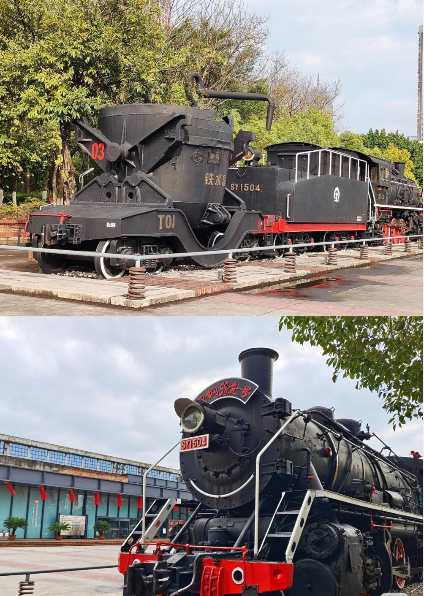
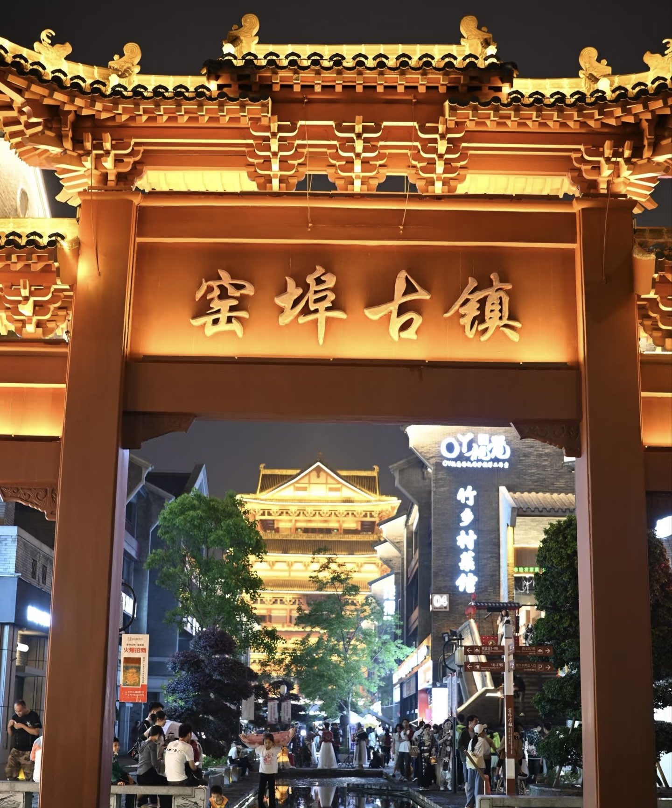

01. 惊艳的柳江风景
柳州的风景是可以与上海黄浦江、香港维多利亚港媲美的。乘船夜游柳江，你可以看到世界最大的人工瀑布群，以及文庙的辉煌灯火。
每当夜幕降临，两岸青山被灯光勾勒出轮廓，江面倒映着城市的繁华，美不胜收。


02. 硬核的工业记忆
柳州不仅有山水，还有钢铁。作为西南工业重镇，柳州工业博物馆记录了这座城市的奋斗史。
这里有复古的蒸汽机车、第一辆“五菱”汽车。粗犷的红砖厂房与锈迹斑斑的钢铁，展现出一种独特的工业美学。
03. 穿越时光的窑埠
窑埠古镇是柳州著名的网红打卡点。虽然是仿古建筑，但它完美融合了商业与传统。
在这里，随处可见穿着民族服饰的游客。夜晚灯笼亮起，仿佛穿越回了千年前的龙城。逛累了，在江边喝一杯咖啡，吹吹江风，无比惬意。
